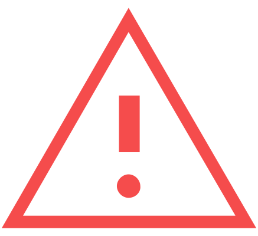

MISE EN GARDE
Le fait de ne pas tenir compte des voyants lumineux et des messages associés qui s'affichent sur l'écran du combiné d'instruments ou dans le système d’infodivertissement peut entraîner des accidents, des blessures graves, des dommages au véhicule ou l'expiration de la garantie.
Les voyants indiquent l'état actuel de certaines fonctions ou les anomalies.
L'activation de certains voyants peut être accompagnée de signaux sonores et de message sur l’écran du combiné d'instruments ou dans le système d’infodivertissement.
Témoins d’alerte
Le témoin d’alerte peut également s'allumer sur l'écran, seul ou avec un autre voyant :

 – Avertissement
– Avertissement
 – Restrictions des systèmes d’aide à la conduite
– Restrictions des systèmes d’aide à la conduite